Lee Mas
Lee Mas
Actividades En Detalle


Una Iglesia Llena De Vida
Tener y poniendo attencion a su relacion personal con
Dios es importante. Pero tener un lugar donde puede
ser parte de una communidad, tambien es necesario.
Servicio Regular
Cada Domingo nos reunimos para adorar
juntos y eschuchar la palabra de Dios.

Santa Cena
El primer Domingo del mes es nuestra Santa
Cena. Es importante en recordar el sacrificio
que nuestro senor Jesus hizo por tu y yo.
Oracion/Predicacion/Estudio
Cada primer Martes del mes tenemos un servicio
de oracion. Cada Martes despues consiste de
predicacion y estudio biblico.
Vigilia
El ultimo Sabado de cada mes es nuestra
vigilia. Una noche entera de palabra,
adoracion, comida, y mas!